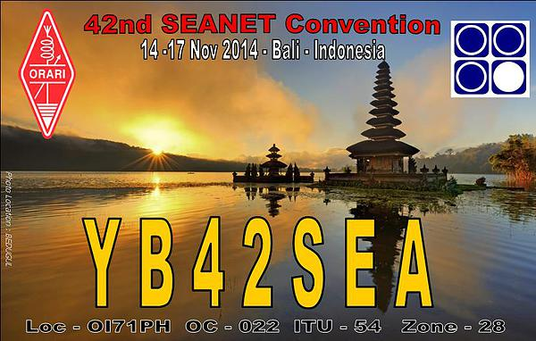

Flash ! DX


|
|
|
|
|
|
|
[Back Issues Nov.2014]
TIME:UTC(JST-09:00)
Report from JA1RJU(PM95sq)
30.Nov.2014(15:00c)
V73SIX/B 23:00- 50.0117 CW Beacon RST599
------------------------------------------------------------------
(PY2BL.PY2DS's 00:00- 50.110 SSB into JR6=Okinawa)
Report from JA1RJU(PM95sq)
29.Nov.2014(15:00e)
V73SIX/B 01:43- 50.0117 CW Beacon weak
VK2ZT 05:08 50.110 SSB
VK2YOC 05:09 50.110 CW
VK2ZQ 05:13 50.115 SSB
VK1AI 05:18 50.110 CW @ RST579 QSB
VK3BY 05:43 50.110 SSB
VK3BDL 05:44 50.110 SSB
VK3WK 05:53 50.125 SSB
VK3NX 05:55 50.125 SSB
VK3XQ 05:59 50.125 SSB
VK3XL 06:01 50.125 SSB
9M6XRO 07:31 50.110 CW CQ
9M6XRO 08:20 50.110 CW CQ still good!
Report from JA1RJU(PM95sq)
28.Nov.2014(15:00c)
VK3AMK 07:16 50.117 SSB
VK3WE 07:16 50.102 CW
VK3DUT 07:18 50.130 SSB
VK2ZT 07:19 50.110 SSB CQ
(VU4KV 07:40- 51.000 FM into JR6=OKINAWA)
9M6XRO 08:11 50.105 CW CQ CQ
Report from JA1RJU(PM95sq)
27.Nov.2014(15:00d)
KH7Y 00:12- 50.105 CW CQ
KH7Y 00:15 50.105 SSB @ RS57 with QSB. 90deg(Direct Beam)
KH7Y 00:30- 50.105 CW/SSB CQing
(VU4KV 06:30- 51.000 FM RSM595++ into JA4.5.6)
9W6EZ 12:59 50.110 SSB CQ
|
◎ 3日連続のRTTYの入感で予想外？に多くのJAとQSOしたVU4KV（Andaman & Nicobar Islands）に、今日もオープンが期待されたが、
なんと、今日は51.000MHzのFMでQRVしてきた。入感したエリアはJA6-5-4の西日本だけで、JA1には全く聞こえなかった。 QSOしたJA6からのリポートでは、VU4KVのFM電波はS9+で強力に入感していたと。 この日の50.090MHzのRTTYの入感を心待ちにしていた局は、”肩透かし”を食った感じで大ショック！。 確かにVU4KVからの情報には次の様な事が書かれていた。 「Unfortunately we did not get permission to operate CW or SSB on VU4. We are only allowed FM and RTTY/digital and we should be getting on 6M during the coming week till the end. 73 de Prasad VU2PTT」 VU4KVから午前中に公開された「LOGサーチ」では「Last QSO in database: 2014-11-26 06:39:51」となっていても、 26日に6mでQSOした局の分のデータはまだ反映されていなかった。夜間になって「Last QSO in database: 2014-11-27 01:50:37」で更新され、 26日のQSO分も全てLOGサーチに掲載された（JA=6M:228 QSOs）。 運用日の残り少ないチャンスは、周波数の低いRTTYで出て貰いたいもの。 |
Report from JA1RJU(PM95sq)
26.Nov.2014(15:00c)
(VU4KV 04:10- 50.090 RTTY Open to JA6)
VU4KV 05:10- 50.090 RTTY UP Good open to JA1!
VU4KV 06:27- 50.090 RTTY UP open again!
9M6XRO 09:31 50.110 CW CQ
|
◎ VU4KV（Andaman & Nicobar Islands）は今日も入感、連続3日の入感で賑わった。 昨日より早めの0510z頃からJA6で入感し始めた信号は、JA1でも安定に入感、オープンのエリアも北上してJA7でもQSOしている。 昨日、確実にQSOしている局が再びQSOしているのが目に付いた。昨日のLOGサーチの公開が遅れているため”保険QSO”と思われるが、 まだQSO出来ていない局にチャンスを与える心配りも必要。 HL/DSから東日本（JA7）までの広範囲に同時にオープンしていた。JA1では06:50z頃から信号は急激に落ちてしまったが、0620z頃に再び弱いCQが確認出来た。 JAとの6mのオープン時間（0500z-0700z頃）には積極的に運用してくれている、QRTする週末までにはまだQSOのチャンスは有りそう。 |
Report from JA1RJU(PM95sq)
25.Nov.2014(15:00c)
VU4KV 05:30- 50.090 RTTY UP Good open to JA1!
VU4KV 06:44 50.090 RTTY @ UP QSO "RST599" (QSL via W4VKU)
|
◎ 昨日から6mの運用を開始、西日本を中心に入感、初QSO出来たVU4KV（Andaman & Nicobar Islands）が、今日は入感のエリアが北上してJA1でも多くの局がQSOに成功した。 JA2/3の西方向から開き始めたVU4KVがJA1とQSOを始めたのは14:30JST頃から。 オープン当初は信号はあまり強くなく、QSBもありこのままコンデションは西に移るのではと心配されたが、 途中から大陸方面のTVのBUZZが強力に入感すると同時にVU4KVの信号も上昇してきた。 VU4KVは、昨日と同様にUP指定で受信していたが、相手がQRV中に呼んでいる局や、”シフト無し”の無変調キャリアだけの局など混乱状態が続いた。 東京西部（PM95）では1550JST頃に急激に信号は弱くなり、BUZZと共に消えてしまった。 先日のFT4TA（Tromelin I.）のオープンは、JA5の一部とJA6/JR6（沖縄）など21QSO出来ただけで東日本には入感なかったが、 今回のVU4は距離的に近い事もあり、本土でのQSOにもチャンスが有った。 VU4KVからの情報によると今回のDX-PEDITIONでは、CW/SSBの運用許可は無く、デジタルモードでの運用に限られていたとの事。 最近は6mでも50.090-95MHz付近でのRTTYの運用が盛んになってきたとは言え、まさかJAからの”ブランドニュー”のVU4（Andaman & Nicobar Islands）の初QRVが、 SSBやCWではなく、RTTYモードで出てくるとは予想もしていなかったため、デジタルモードの準備の無い局は大慌てだった。 VU4KVの運用は今週末までの予定だが、JAとの6mのオープン時間が0500-0700z頃と運用のコツを覚えてくれた様なので、QRTするまでにはまだQSOのチャンスは有りそう。 |
Report from JA1RJU(PM95sq)
24.Nov.2014(15:00d)
V73SIX/B 02:15- 50.0117 CW Beacon
V73SIX/B 03:50- 50.0117 CW Beacon RST599+
9M6XRO 06:28 50.110 CW RST599
(VU4KV 06:40- 50.090 RTTY UP2-4 QSO with JA2-6/JR6)
9M6XRO 07:12 50.083 RTTY RST599 UP
(VU4KV 07:15- 50.090 RTTY QRX Nil JA1)
DK7GG/DU6 08:04 50.121 SSB RS59+
DU1EV/B 08:05- 50.008 CW Beacon RST599
VK5PO 08:06 50.110 CW CQ
VK6KXW 08:08 50.110 CW CQ
(VU4KV 08:08- 50.090 RTTY Again CQ JA6)
9M6XRO 08:55 50.104 CW CQ
Report from JA1RJU(PM95sq)
23.Nov.2014(15:00d)
VK2ZQ 05:46 50.110 SSB
VK2ZT 05:50 50.110 SSB @ RS59/55
VK8VF/b 05:50- 50.310 CW Beacon
VK2IL 06:00 50.110 SSB
VK2ZQ 06:01 50.110 SSB
VK2EMA 06:04 50.110 SSB @ QF37
VK3DUT 06:06 50.125 SSB
VK2BXT 06:11 50.115 SSB
VK2BJ 06:20 50.106 CW @ Barry
VK3WE 06:30 50.102 CW @
VK2BJT 06:40 50.104 CW @
VK2ZT 06:46 50.116 SSB
ZL3NW 06:46 50.110 SSB
ZL3ADT 06:56 50.110 SSB
VK7ZIF 07:04 50.110 SSB
VK7ZIF 07:10 50.135 SSB @ RS59
VK7AC 07:13 50.110 SSB
VK4WR 07:15 50.110 SSB CQ
VK7AC 07:20 50.120 SSB @ Norm RS59
VK7XX 07:10 50.110 SSB
VK3XDX 07:27 50.110 SSB
VK3AMK 07:28 50.110 SSB
VK3BDL 07:28 50.110 SSB
VK7AC 07:29 50.120 SSB still good
VK7XX 07:50 50.120 SSB with VK7AC
VK4HJ 07:58 50.110 SSB CQ
Report from JA1RJU(PM95sq)
22.Nov.2014(15:00e)
LU9AEA 23:32 50.105 SSB @ RS57/55
-----------------------------------------------------------------
ZL2OK 02:02 50.115 SSB @ RS59/59
ZL2GR 02:06 50.130 SSB @ RS59/57
ZL3NW 02:23 50.100 CW
ZL3JT 04:02 50.106 CW @ RST599 QSB
VK6AKT 05:31 50.110 SSB CQ
VK6KXW 05:40 50.110/107 CW CQ
VK6OX 05:45 50.106 CW CQ DX
VK5PO 05:50 50.110 CW CQ
VK6KXW 05:51 50.110 CW CQ DX
VK6RO 06:17 50.110 CW
VK6DKT 06:31 50.110 SSB
VK6RPH/B 06:35- 50.066 CW Beacon
VK5PO 06:50 50.110/105 CW CQ
Report from JA1RJU(PM95sq)
21.Nov.2014(15:00d)
V63YY 04:05 50.120 CW CQ UP RST599
V73SIX/B 04:30- 50.0117 CW Beacon
V63YY 04:28 50.120 CW still good
V63YY 04:40 50.130 SSB @ RS59 (04:55-F.OUT)
DU1EV/B 07:45- 50.008 CW Beacon
Report from JA1RJU(PM95sq)
20.Nov.2014(15:00d)
ZL1SIX/b 03:20- 50.0108 CW Beacon (GL=RF64sv)
ZL1AVO 03:41 50.110 SSB @ RS59
ZL1AVZ 03:42 50.120 SSB @ RS57
ZL1BMW 03:54 50.120 SSB @ RS59
ZL4AX 03:58 50.110 SSB
ZL1AKW 04:00 50.110/130 SSB
ZL2WHO/b 04:05- 50.024 CW Beacon RST599
ZL4AX 04:16 50.107 CW CQ
V63YY 04:22 50.1197 CW @ UP1 (QSL to JA1VND)
FK8SIX/B 04:38- 50.080 CW Beacon FSK
V73SIX/B 04:38- 50.0117 CW Beacon
9M6XRO 06:40 50.105 CW CQ RST599
Report from JA1RJU(PM95sq)
19.Nov.2014(15:00c)
V73SIX/B 23:00- 50.0117 CW Beacon
(LU9AEA 23:28 50.105 SSB JA1.JA6)
-----------------------------------------------------------------------
Report from JA1RJU(PM95sq)
18.Nov.2014(15:00c)
V73SIX/B 03:40- 50.0117 CW Beacon
V73SIX/B 05:40- 50.0117 CW Beacon
DU1EV/B 12:45- 50.008 CW Beacon
14-17.Nov.2014(15:00b)
◎ 42nd SEANET CONVENTION BARI INDONESIA



Report from JA1RJU(PM95sq)
13.Nov.2014(15:00e)
ZP5SNA 01:36 50.104 SSB weak
(PY2XB 01:45-0219 50.097 CW JA3-6.0 Nil hr)
LU5FF 02:00 50.099 CW
LU5FF 02:10 50.115 SSB
LU5FF 02:20 50.330 WSJT JT65 QSO with JR6 (Nil hr)
KH7Y 03:25 50.105 CW CQ CQ Sc 130deg.
V73SIX/B 03:35- 50.0117 CW weak yet.
KH6SX 03:45 50.110 CW CQ Sc 130deg.
V63NK 05:36 50.133 CW Pohnpei Is
V73SIX/B 05:36- 50.0117 CW Beacon
FK8SIX/B 05:36- 50.080 CW Beacon FSK weak
XV4F 06:56 50.103 CW CQ CQ
DU1EV/B 06:59- 50.008 CW Beacon RST599
XV4F 07:01 50.103 CW @ RST579/599
BG9HKP 07:15 50.108 CW CQ CQ
Report from JA1RJU(PM95sq)
12.Nov.2014(15:00d)
V73SIX/B 00:15- 50.0117 CW Beacon RST599
--------------------------------------------------------------------
V73SIX/B 02:55- 50.0117 CW Beacon
DK7GG/DU6 07:09 50.110 SSB @ Martin RS59+
DU7/PA0HIP 07:14 50.110 SSB
DU1KA 07:15 50.110 SSB
DU1EV/B 07:15- 50.008 CW Beacon
DU1KA 07:26 50.115 SSB @ AL RS59+
DU7/PA0HIP 07:42 50.105 SSB/CW Calling BG3OJZ
DU1/JA3FJE 07:45 50.195 SSB RS59+
Report from JA1RJU(PM95sq)
11.Nov.2014(15:00d)
(CX7CO 21:54 50.098 CW JA7)
(LU9AEA 21:55 50.110 SSB JA7)
(LU5FF 22:33 50.094 CW JA3/5)
(V73SIX/B 23:09- 50.0117 CW Beacon JA7/8)
--------------------------------------------------------------------
V73SIX/B 00:15- 50.0117 CW Beacon RST599
(CX1CCC/B 00:17- 50.00204 CW Beacon GF15=>JA8)
KH7Y 00:30 50.105 CW RST599
(CX1RK 00:55 50.110 SSB GF25=>JA8)
(CX4SS 01:15 50.100 SSB JA8)
(LU2ERC/B 01:27- 50.063 CW Beacon JA8)
PY3KN 01:19 50.130 SSB
WH6WI 01:40 50.115 SSB/CW
KH7Y 01:45 50.105 CW
KH6/K6MIO 01:52 50.130 SSB
AH7C 01:55 50.116 CW
KC7I 02:16 50.120 SSB
V73SIX/B 03:00- 50.0117 CW Beacon
V73SIX/B 04:30- 50.0117 CW Beacon still good RST599
KH7Y 05:23 50.110 CW
VK8RR 05:24 50.110 CW
KH7C 05:24 50.110 CW CQ
V63XZ 05:39 50.133 CW @ RST599 (QSL Direct to JE1HXZ)
VK8RR 05:55 50.110 SSB RS59
VK8RR 06:00 50.150 SSB
VK2FAD 06:00 50.120 SSB RS59
V63XZ 06:30 50.133 CW CQ still good
V63XZ 06:42 50.133 SSB @ RS59 (QRV=Nov.11-16)
VK8RR 06:53 50.110 SSB
VK8VF/b 06:55- 50.310 CW Beacon
Report from JA1RJU(PM95sq)
10.Nov.2014(15:00c)
VK5PO 06:04 50.110/100 CW CQ
VK5ZK 06:28 50.110 CW
VK5ZK 06:37 50.105 CW @ Gary RST579
Report from JA1RJU(PM95sq)
09.Nov.2014(15:00d)
V63NK 03:50 50.110 SSB CQ Pohnpei Is (QSL to JF2XQP)
V63NK 04:02 50.110 SSB @ RS59/59
V63NK 05:35 50.115 SSB still good RS59 (05:45=QRT)
V73SIX/B 05:40- 50.0117 CW Beacon RST599
XV4F 06:28 50.105 CW @ Keith (QSL to G4FUF=direct only)
XV4F 07:00 50.105 CW UP1 still good
V73SIX/B 07:20- 50.0117 CW Beacon
V73SIX/B 08:05- 50.0117 CW Beacon
XV4F 08:17 50.105 CW CQ again
Report from JA1RJU(PM95sq)
08.Nov.2014(15:00d)
VK4TJ 03:11 50.110 CW CQ
V73SIX/B 03:11- 50.0117 CW Beacon
VK4RGG/b 03:12- 50.0578 CW Beacon
FK8SIX/B 03:12- 50.080 CW Beacon FSK
VK4RSC/b 03:12- 50.2846 CW Beacon
VK4AHW 03:17 50.110/125 SSB CQ QSY
V63NK 03:26 50.110 CW CQ Pohnpei Is QRV=>07-10.Nov)
V63NK 03:28 50.110 CW @ RST599/599 (QSL to JF2XQP)
V63PJ 04:25 50.110 CW Pohnpei Is QRV=>07-10.Nov (QSL to JF2SDR)
DU1EV/B 05:00- 50.008 CW Beacon
V73SIX/B 05:00- 50.0117 CW Beacon
V63NK 05:00 50.110 CW CQ still good
N7ET/DU7 05:18 50.108 CW
VK4WTN 05:35 50.104 CW CQ
VK3XDX 09:37 50.105 CW CQ
Report from JA1RJU(PM95sq)
07.Nov.2014(15:00c)
VK4ZJB 02:48 50.110 SSB CQ
VK4BOO 02:50 50.110 SSB
ZL1RS 02:50 50.103 CW CQ CQ
ZL1RS 02:55 50.103 CW @
VK4RGG/b 03:00- 50.057 CW Beacon
FK8SIX/B 03:00- 50.080 CW Beacon FSK
VK4RSC/b 03:00- 50.2846 CW Beacon (GL=QG63ls)
VK2RHV/B 03:00- 50.288 CW Beacon (GL=QF57sc)
ZL4AX 03:09 50.106 CW @ RST579
VK2FA 03:07 50.107 SSB @ RS56 Graham
VK4WTN 03:14 50.104 CW
KH7Y 03:20 50.105 CW @ CQ RST579-599 at peak SC12-130deg
ZL4AX 03:22 50.106 CW CQ CQ
V73SIX/B 03:22- 50.0117 CW Beacon
KH7Y 03:55 50.105 CW CQing still good
VK4AHW 03:59 50.110/13 SSB QSY
VK4WTN 04:00 50.104 CW
VK7RR/4 04:00 50.110 SSB CQ
VK2FA 04:09 50.110/120 SSB RS59+
VK4AHW 04:10 50.125/130 SSB RS59+
VK4BG 04:16 50.110 SSB CQ RS59+
Report from JA1RJU(PM95sq)
06.Nov.2014(15:00d)
DU3LA 02:00 50.102 CW CQ CQ
DU1EV/B 02:00- 50.008 CW Beacon
VK4ZJB 02:17 50.110/120 SSB
FK8CP 02:19 50.110 CW CQ
FK8SIX/B 02:20- 50.080 CW Beacon
VK5BC 03:15 50.110/135 SSB CQ & QSY
VK4RSC/b 03:15- 50.2848 CW Beacon
VK5RBV/b 03:15- 50.315 CW Beacon
VK5PO 03:22 50.105 CW
V73NS 04:00 50.105 CW CQ CQ
V73SIX/B 04:00- 50.0117 CW Beacon
UR5FA/MM 12:49 50.110 CW CQ (GL=OH88)
N7ET/DU7 12:51 50.110/106 CW
|
◎ 早朝の南米は九州から沖縄に掛けて入感しているが、関東ではスポット的に短時間入感するだけ。 11月1日からインド洋の離島、トロメリン島（Tromelin Island）から運用をしているFT4TAは、JA3以西でQSO出来ているが、 毎日更新されている「CLUBLOG」によると、11月5日15:23z現在、FT4TAの6mでのJAとのQSO数は21（CW/SSBのダブリを含む）となった。 FT4TAは50.105MHzで「E E E FT4TA」の繰り返しのBeaconを出していて、コールする局が聞こえたら応答する方法で運用している。 ● The traffic on 50 MHz won't be the team's priority. However, don't hesitate to signal to the operators all quivering of the strip in the event would not know active to that moment. We will only use the classic fashions (CW and SSB). No EME, WSJT or Digi is not foreseen. To some moment these are 6 stations that are on active, since we added one of our emergency emitter to watch the 6m, that allowed us to store close to 300 QSO on the magic-band. |
Report from JA1RJU(PM95sq)
05.Nov.2014(15:00c)
(PY3KN 00:25 50.110 SSB JA1)
V73SIX/B 02:03- 50.0117 CW Beacon
9W6EZ 06:07 50.123 SSB
(FT4TA 10:12 50.105 SSB JA5)
Report from JA1RJU(PM95sq)
04.Nov.2014(15:00d)
V73SIX/B 04:20- 50.0117 CW Beacon
VK4JU 11:52 50.105 CW RS59
VK4RTH/b 11:55- 50.281 CW Beacon
VK4RTL/b 11:55- 50.282 CW Beacon
UR5FA/MM 12:06 50.110 CW CQ CQ (GL=OI85)
Report from JA1RJU(PM95sq)
03.Nov.2014(15:00f)
VK4AMG 03:46 50.110/107 CW CQ QSY
VK4WTN 03:50 50.104 CW CQ
V73SIX/B 04:50- 50.0117 CW Beacon
VK4RSC/b 05:00- 50.284 CW Beacon
VK2RHV/b 05:00- 50.288 CW Beacon
VK6KXW 05:55 50.110 CW
VK6DVR 06:05 50.110 SSB
VK6AKT 06:11 50.110 SSB
DU1EV/B 06:35- 50.008 CW Beacon
VK6OX 06:39 50.105 CW CQ
DU1EV/B 07:50- 50.008 CW Beacon RST599+
T88AX 07:50 50.192 SSB RS59++ (QSL via JA3RAF)
DU7/PA0HIP 07:55 50.110 CW RST599+++
UR5FA/MM 08:16 50.111 CW QSO with DU7/PA0HIP & CQ
(FT4TA 12:04 50.105 SSB QSO JA6-JR6=Kyusyu)
FT4TA 12:25 50.105 CW QSO JA4-JA6
DU7/PA0HIP 13:33 50.105 CW RST599+
DU7/PA0HIP 14:00 50.105 CW CQ CQ RST599+
Report from JA1RJU(PM95sq)
02.Nov.2014(15:00d)
(LU1FKR 00:30 50.135 SSB CQ JA7)
(ZP5SNA 01:29 50.107 CW in to JA6)
(EA8DBM 02:03 50.101 CW LP QSO JA6)
(PY7RP 02:10 50.110 SSB QSO JA6)
(PY2XB 02:15 50.0985 CW QSO JA6)
(PY7RP 02:46 50.1052 CW via LP in to JA6)
UR5FA/MM 08:10 50.110/113 CW CQ RST599
(3B8DB 08:26 50.115 CW JA6)
UR5FA/MM 09:11 50.110 SSB RS59 QSO with SV1DH!
(3B8DB 10:42 50.115 CW QSO JS6=Okinawa)
(FT4TA/b 10:42- 50.110 CW Beacon RST529 into JR=Okinawa)
(FT4TA 11:11 50.105 CW QSO JR6=Okinawa)
(FT4TA 11:32 50.105 CW QSO JR6=Okinawa)
(FT4TA 11:33 50.105 SSB QSO JR6=Okinawa)
|
◎ 早朝の南米とロングパスのEU（EA8DBM）が九州から沖縄に掛けて入感したが、関東では南米の入感は確認されていない。
10月10日から6mにもアクティブにQRVしてくれたLord Howe IsのVK9DLXは、10/29日に撤収、グループは帰国したが、
2名のメンバーが引き続き島に残って運用しているが、"holiday style operation"で、
6mの運用は行われていない。運用期間の予定は不明。
◎ FT4TA(Tromelin Island)QRV! ○ [FT4TA/UPDATE 5 =17:30z=] As planned, we finished the antenna set-up. Last night we put a beacon on 50.105MHz CW with one of our spare transceivers. Almost immediately hundred of contacts in Asia, Europe and Africa have been achieved. |
Report from JA1RJU(PM95sq)
01.Nov.2014(15:00c)
FK8CP 03:09 50.110 CW CQ
VK4WTN 03:11 50.100 CW
FK8SIX/B 03:14- 50.080 CW Beacon
V73SIX/B 03:14- 50.0117 CW Beacon
VK4EK 03:25 50.110 SSB CQ
ZL2WHO 03:26 50.110 SSB
ZL3MF 03:32 50.125 SSB
ZL3NW 03:35 50.140 SSB
ZL3MF 03:39 50.125 SSB @ RS59
ZL2WHO/B 03:45- 50.024 CW Beacon
ZL3SIX/B 03:45- 50.040 CW Beacon
ZL3DAC 03:47 50.110/115 SSB
ZL1AKW 03:51 50.110 SSB
ZL1AKW 03:55 50.115 SSB @ Dave RS59
ZL1AKW 03:57 50.125 SSB
VK4DAM 03:59 50.110 SSB
ZL2WHO 04:00 50.110 SSB
ZL3MF 04:02 50.110 SSB
ZL2WHO 04:04 50.140 SSB
ZL3AAU 04:08 50.160 SSB
ZL1AKW 04:11 50.125 SSB
ZL3DAC 04:19 50.115 SSB
ZL3TKZ 04:27 50.110 SSB @ RS57
ZL4PW 04:43 50.102 CW RS599
ZL3NB 04:45 50.105 CW
ZL3NB 04:54 50.105 CW @
ZL2WHO/B 05:00- 50.024 CW Beacon still good
ZL3SIX/B 05:00- 50.040 CW Beacon
V73SIX/B 05:00- 50.0117 CW Beacon
ZL3AAU 05:02 50.160 SSB still RS59
VK6RSX/b 06:15- 50.304 CW Beacon
VK6RBU/b 06:15- 50.306 CW Beacon
VK6KXW 06:18 50.110/105 CW RST599
V73SIX/B 06:20- 50.0117 CW Beacon
UR5FA/MM 08:12 50.110 CW CQ RST599 QTH=>PJ08
UR5FA/MM 09:02 50.113 CW @ QSY RST599